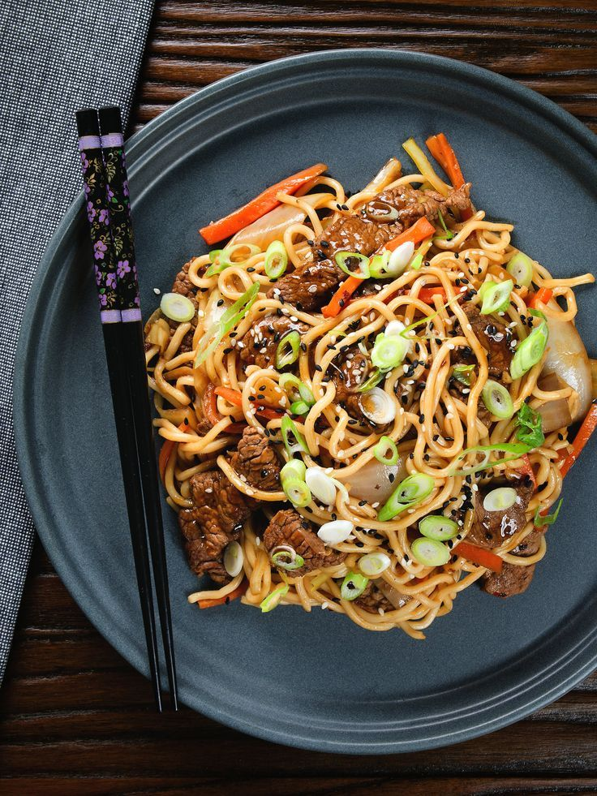

Receita de Yakisoba (4 porções)

Ingredientes
- 300 g de macarrão para Yakisoba
- 1 colher (sopa) de óleo
- 1/2 maço pequeno de couve-flor
- 400 g de carne cortada em tiras
- 1 cenoura cortada em rodelas
- 1 colher (sopa) de amido de milho, dissolvido em 50 ml de água
- 1 cebola grande cortada em pedaços médios
- 1/2 maço pequeno de brócolis
- 10 colheres (sopa) de molho shoyu
- 100 g de champignon
- 250 ml de água
- Acelga a gosto
Modo de preparo: 40 minutos
- Cozinhe o macarrão em ponto al dente e reserve.
- Em uma panela, adicione o azeite, a cebola, a carne e refogue bem.
- Adicione o molho shoyu e cozinhe por 3 minutos em fogo médio.
- Acrescente mais água, aguarde levantar fervura e adicione o amido de milho.
- Mexa até engrossar, abaixe o fogo e adicione o champignon, a couve-flor, o brócolis e a cenoura.
- Cozinhe por 8 minutos e acrescente, por último, a acelga e o macarrão.
- Misture bem, acerte o sal e tampe a panela por mais 1 minuto.
- Está pronto para servir!
Curiosidades sobre o Yakisoba:
- "Yakisoba" significa "macarrão grelhado".
- Foi introduzido no Japão no século XIX, durante a abertura dos portos japoneses ao comércio exterior.
- No Japão, comer yakissoba em festivais é considerado sorte, pois o macarrão longo simboliza vida longa e prosperidade.
- O yakisoba é um prato de origem chinesa, mas que se tornou muito popular e difundido no Japão, onde foi aperfeiçoado e adaptado.
- O yakisoba tem suas raízes no "chao men", um prato chinês de macarrão frito.